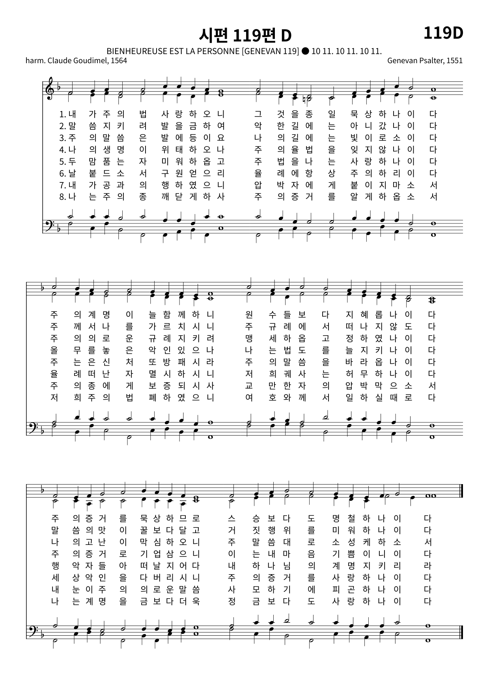

시편 119편 D
BIENHEUREUSE EST LA PERSONNE [GENEVAN 119] · 10 11. 10 11. 10 11.
곡조: Genevan Psalter, 1551 · 화성: Claude Goudimel, 1564 · 가사: 개역한글판 시편 119편 편역(AI 초벌 편역판 · 신학 감수 전) · 8절
시편 119편은 6곡으로 나누어 실었습니다: A B C D E F · 이 곡은 시편 119편 가사의 25~32번째 절입니다.
악보 PDF MusicXML(출력용) MusicXML(반주용, 전주·반복 포함) 개역한글 시편 119편 읽기
악보
← 시편 119편 C 목록반주 재생(준비 중)시편 119편 E →
가사
1절
내가 주의 법 사랑하오니
그것을 종일 묵상하나이다
주의 계명이 늘 함께하니
원수들보다 지혜롭나이다
주의 증거를 묵상하므로
스승보다도 명철하나이다
내가 주의 법 사랑하오니
그것을 종일 묵상하나이다
주의 계명이 늘 함께하니
원수들보다 지혜롭나이다
주의 증거를 묵상하므로
스승보다도 명철하나이다
2절
말씀 지키려 발을 금하여
악한 길에는 아니 갔나이다
주께서 나를 가르치시니
주 규례에서 떠나지 않도다
말씀의 맛이 꿀보다 달고
거짓 행위를 미워하나이다
말씀 지키려 발을 금하여
악한 길에는 아니 갔나이다
주께서 나를 가르치시니
주 규례에서 떠나지 않도다
말씀의 맛이 꿀보다 달고
거짓 행위를 미워하나이다
3절
주의 말씀은 발에 등이요
나의 길에는 빛이로소이다
주의 의로운 규례 지키려
맹세하옵고 정하였나이다
나의 고난이 막심하오니
주 말씀대로 소성케 하소서
주의 말씀은 발에 등이요
나의 길에는 빛이로소이다
주의 의로운 규례 지키려
맹세하옵고 정하였나이다
나의 고난이 막심하오니
주 말씀대로 소성케 하소서
4절
나의 생명이 위태하오나
주의 율법을 잊지 않나이다
올무를 놓은 악인 있으나
나는 법도를 늘 지키나이다
주의 증거로 기업 삼으니
이는 내 마음 기쁨이니이다
나의 생명이 위태하오나
주의 율법을 잊지 않나이다
올무를 놓은 악인 있으나
나는 법도를 늘 지키나이다
주의 증거로 기업 삼으니
이는 내 마음 기쁨이니이다
5절
두 맘 품는 자 미워하옵고
주 법을 나는 사랑하나이다
주는 은신처 또 방패시라
주의 말씀을 바라옵나이다
행악자들아 떠날지어다
내 하나님의 계명 지키리라
두 맘 품는 자 미워하옵고
주 법을 나는 사랑하나이다
주는 은신처 또 방패시라
주의 말씀을 바라옵나이다
행악자들아 떠날지어다
내 하나님의 계명 지키리라
6절
날 붙드소서 구원 얻으리
율례에 항상 주의하리이다
율례 떠난 자 멸시하시니
저희 궤사는 허무하나이다
세상 악인을 다 버리시니
주의 증거를 사랑하나이다
날 붙드소서 구원 얻으리
율례에 항상 주의하리이다
율례 떠난 자 멸시하시니
저희 궤사는 허무하나이다
세상 악인을 다 버리시니
주의 증거를 사랑하나이다
7절
내가 공과 의 행하였으니
압박자에게 붙이지 마소서
주의 종에게 보증 되시사
교만한 자의 압박 막으소서
내 눈이 주의 의로운 말씀
사모하기에 피곤하나이다
내가 공과 의 행하였으니
압박자에게 붙이지 마소서
주의 종에게 보증 되시사
교만한 자의 압박 막으소서
내 눈이 주의 의로운 말씀
사모하기에 피곤하나이다
8절
나는 주의 종 깨닫게 하사
주의 증거를 알게 하옵소서
저희 주의 법 폐하였으니
여호와께서 일하실 때로다
나는 계명을 금보다 더욱
정금보다도 사랑하나이다
나는 주의 종 깨닫게 하사
주의 증거를 알게 하옵소서
저희 주의 법 폐하였으니
여호와께서 일하실 때로다
나는 계명을 금보다 더욱
정금보다도 사랑하나이다